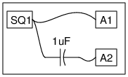

The objective of this experiment is to show that a signal could be a combination of AC and DC.
The AC part can be separated using a capacitor, since it blocks DC. We will use a 0 to 5V square wave
as input. It is a combination of 2.5 volt DC and 2.5 volt DC
Schematic

Instructions
- The output of SQ1 changes between 0 and 5 volts, as shown by the output A1.
- That means it has an average of 2.5 volts, that is the DC part
- After passing through a capacitor the voltage changes from -2.5 to +2.5 volts, the AC part.
- The DC part is blocked by the capacitor.
- You need to connect a 100kOhm resistor from A2 to ground to remove the DC properly.